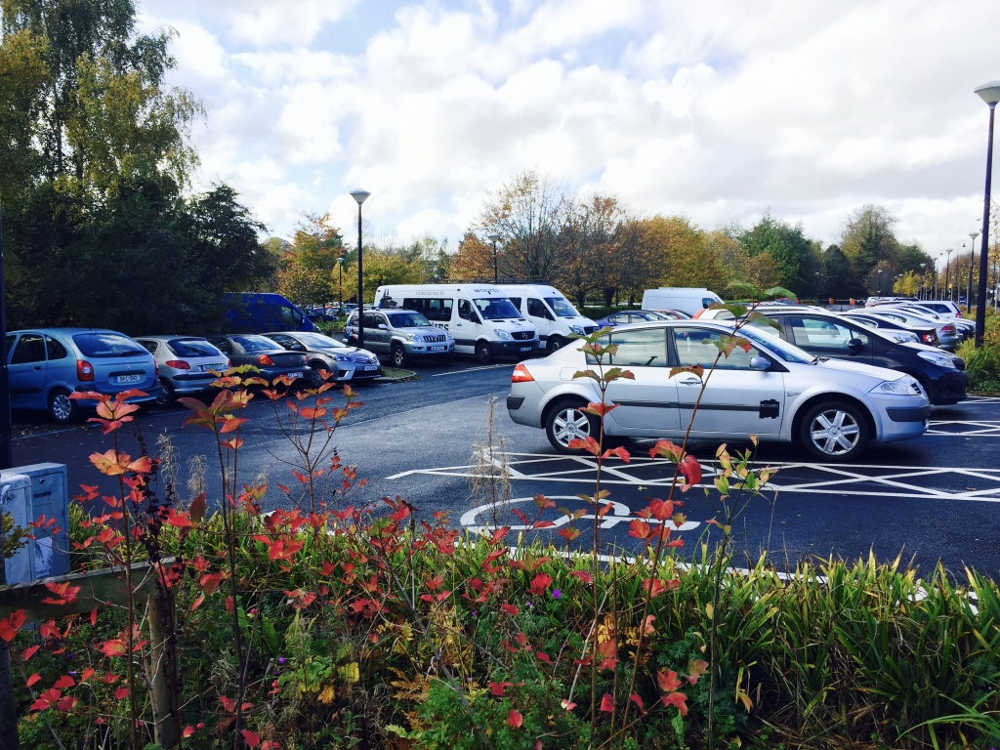
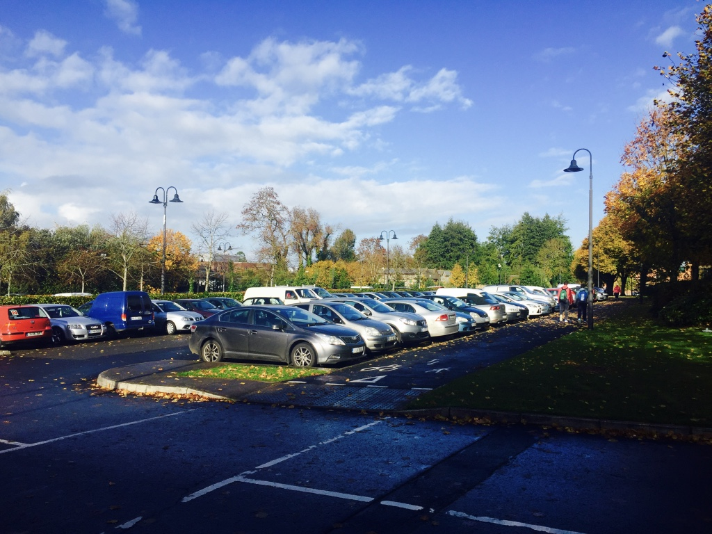

Student Centre

Useful Information
General Information
While construction on the Student Centre commenced in 1985, it was expanded over the years up to and including 1999. Comprising a number of separate buildings totalling 4,468m2 in area, the Centre includes the Students' Union offices, meeting rooms, student facilities, two bars, a large food store, a barber shop, a print shop, the only bank on campus (with two ATM machines), the UL Visitor Centre and the Paddocks Restaurant. Shower facilities are available for registered Smarter Travel users.
Visitor Centre & University Shop
The UL Visitor Centre and University Shop are located in the student courtyard. The shop stocks UL-branded clothing, including hoodies, t-shirts, beanie hats, UL Wolves clothing and GAA gear. UL gifts and a range of children's items are also available. Make sure to call in and have a look around the newest addition to the UL campus.
Visitor Centre & University Shop WebsiteThe Stables Club
The main campus bar, the Stables Club, offers food and beverages all day. Located in the main social hub, the Student Centre, the Club also offers quality night time entertainment.
The Scholars Club
The Scholars Club and Bar provides food and beverages in a relaxed and intimate environment. The Club serves carvery every day and can cater for parties up to 80 people.
The Paddock Restaurant

The Paddocks Restaurant provides self-service breakfast and lunch. A variety of hot dishes are available throughout the day, and sandwiches and rolls are made to order.
Banking

Banking on campus is provided by Bank of Ireland. The branch can be found in the Student Centre, and there are a number of ATMs around the campus. Opening hours of the branch are 10.00 to 16.00, Monday to Friday.
Convenience Store
The University of Limerick Students' Union operates the Spar Shop in the Student Centre. The store sells fresh fruit and vegetables, frozen foods and dairy and an extensive selection of deli goods.
Book Store

The book store is operated by O'Mahony’s Booksellers. The book shop stocks both new and secondhand books required by students and an extensive range of stationery, daily newspapers and greeting cards.
O'Mahonys Book shop WebsiteStudents' Union
The ULSU provides services and representation for the student population at UL. The union's main services include Clubs and Societies, entertainments, an advisory service and a common/games room.
Students' Union WebsiteContemplative Space
The Contemplative Space is designed for quiet contemplation, meditation and silent prayer. The space is shared by all faiths and services are organised regularly. Open daily.
Contemplative Space WebsitePrint Store
Snap Printing caters for all design, print and copy requirements, such as brochures, booklets, flyers, posters and binding. Open Monday to Friday, 09.30 to 17.00 (closed for lunch from 13.00 to 14.00).
Snap Printing WebsiteLaunderette
The launderette is operated by Kilross Laundry Company. The launderette provides a same-day wash and dry service along with dry cleaning at great prices. Open Monday to Friday, 09.00 to 17.00
Travel Store
USIT Travel Shop offers reduced travel rates to students and those under 25. USIT is the specialist in student, youth and independent travel. Low-cost airfares, discounted rail/bus fares and J1 visa arrangements are among the services offered.
USIT WebsiteJohnny's Barber Shop
Johnny's Barber Shop WebsiteMusilim Pray Room
Nearest Car Park

Car Park 2: Pay Car Park
Guide Me There
Car Park 3: Staff Car Park
Guide Me There
Car Park 8: Free Car Park
Guide Me There